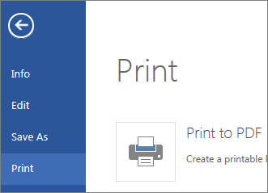
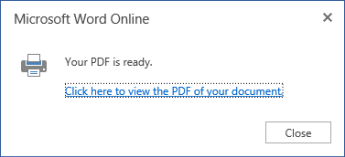

Seeing a print preview for your document in Word for the web can seem a little confusing. That’s because it first creates a PDF to preserve the layout and formatting, and then you preview the PDF.
From the File tab in Word for the web, click Print. Even though the only option is Print to PDF, the PDF is the truest version of what would come out of your printer.

The Word Web App generates a PDF copy of your document.

Click Click here to view the PDF of your document to open the PDF preview of your document.
Tip: If your default PDF viewer is Word, cancel the Word for the web print job, open the document in Word (Edit Document > Edit in Word) and preview it from Word (File > Print).
When you’ve finished previewing your document, click Cancel to exit preview an return to Word for the web.